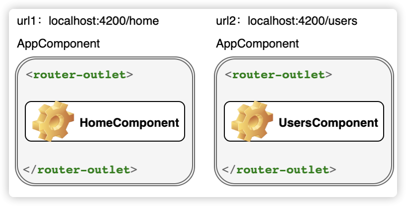
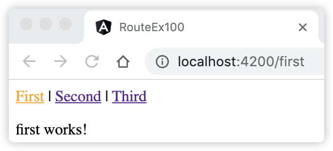
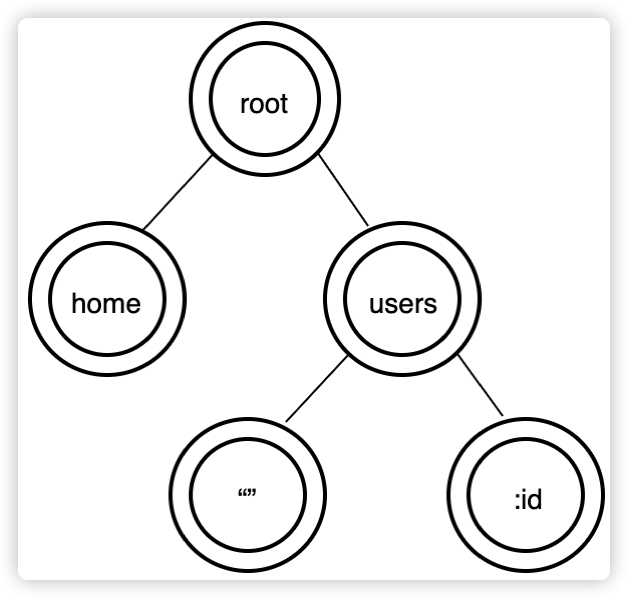
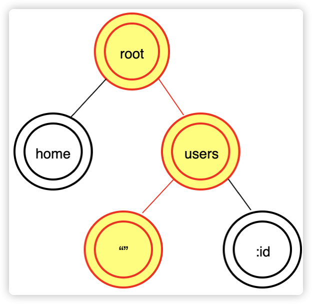
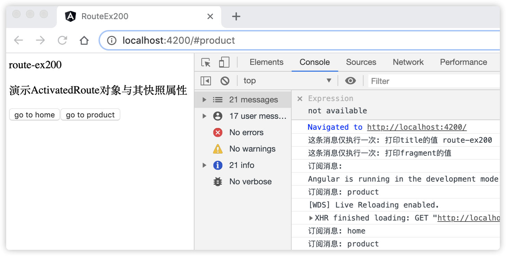
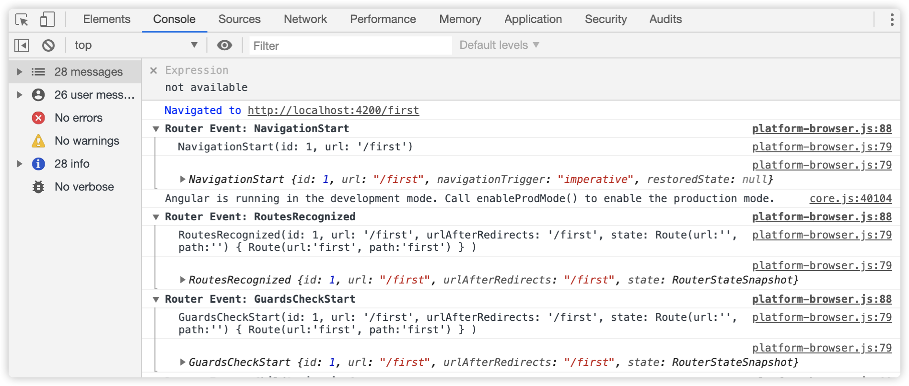
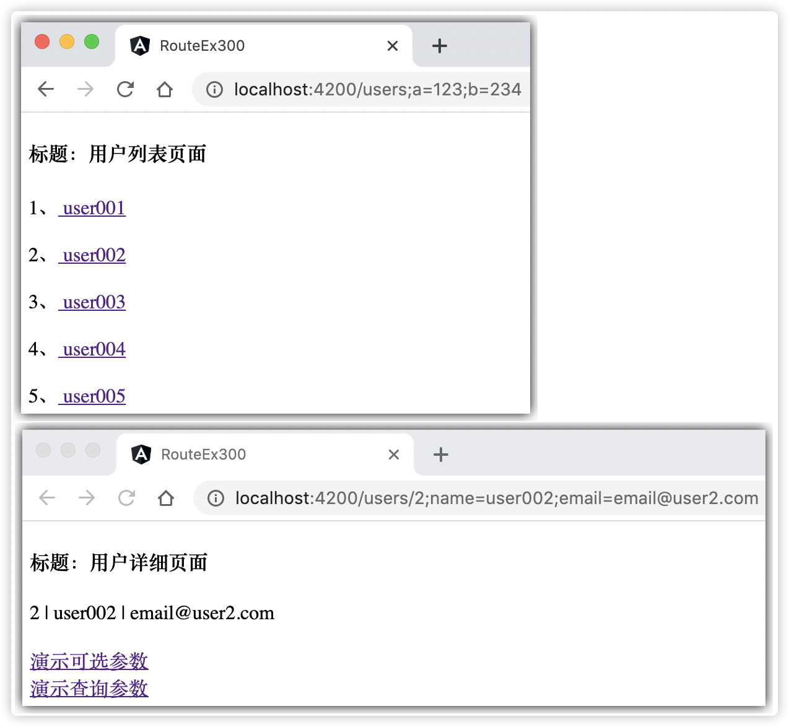
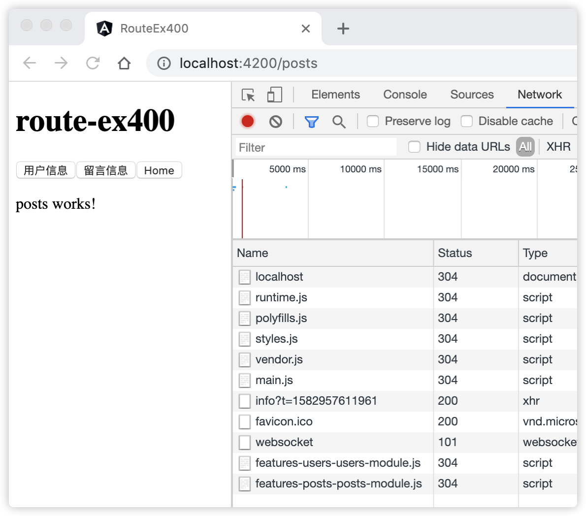

10 熟悉Angular路由功能¶
Angular路由器（Angular Router）使开发人员可以构建具有多个视图的单页应用程序，并允许用户在这些视图之间导航。 Angular路由器的主要功能有从处理应用程序导航，加强路由防护，以及促进模块的延迟加载等。Angular路由对于大多数应用程序都是必不可少的。
接下来，我们详细了解Angular路由的基本概念。
10.1 Angular路由介绍¶
Angular路由服务是一个可选的服务，它用来呈现指定的URL所对应的视图。它并不是Angular核心库的一部分，而是位于@angular/router包中。像其它 Angular包一样，需要时才从此包中导入。
10.1.1 创建应用的路由模块¶
默认情况下，使用Angular CLI命令 ng new 构建应用程序时会提示是否需要路由服务功能，可以在命令后添加选项参数 --routing 来指定需要路由服务功能。当选择需要路由时，构建命令将会生成一个独立的路由模块文件，该文件名默认为app-routing.module.ts，它的初始代码如下：
import { NgModule } from '@angular/core'; import { Routes, RouterModule } from '@angular/router'; const routes: Routes = []; @NgModule({ imports: [RouterModule.forRoot(routes)], exports: [RouterModule] }) export class AppRoutingModule { }
从上面的代码可以看出，AppRoutingModule类由@NgModule()装饰器声明，说明它是一个NgModule类，我们称之为应用的路由模块。 应用的路由模块用于封装路由器配置，它可以在根模块和特性模块的级别上使用。
应用的路由模块具有以下特征：
路由模块不需要declarations，即不需要声明组件、指令和管道；
RouterModule.forRoot(routes)方法将会注册并返回一个全局的单例RouterModule对象，imports元数据导入这个单例对象；
exports元数据导出RouterModule对象，这里是专门提供给根模块导入的；
路由模块最终由根模块导入。执行
ng new命令时，Angular已经默认帮我们在根模块AppModule的imports元数据中导入了AppRoutingModule。
10.1.2 理解系统路由服务¶
上面的AppRoutingModule路由模块代码中引用了Routes和RouterModule对象，它们都是从@angular/router包中导入的系统路由对象。Routes类用于创建路由配置，RouterModule也是一个独立的 NgModule类，用于提供所需的路由服务，这些服务包含在应用视图之间进行导航的指令。RouterModule类中提供了 路由器（Router）服务，该服务是全局的一个单例服务。同时还提供了一些路由指令，比如RouterOutlet和routerLink等指令。
AppRoutingModule路由模块中导出了RouterModule对象，应用的根模块AppModule中导入了AppRoutingModule，即导入了RouterModule对象，RouterModule对象注册了一个全局的路由器服务，该服务让应用的根组件可以访问各个路由器指令。
如果在特性模块中需要使用路由器指令，那么需要在特性模块导入RouterModule，这样它们的组件模板中才能使用这些路由器指令。
RouterModule对象有一个forChild()方法，也可以传入Route对象数组，尽管forChild()和 forRoot()方法都包含路由指令和配置，但是forRoot()方法可以返回Router对象，由于Router服务会改变浏览器的Location对象（可以理解为地址栏中的URL），而Location对象又是一个全局单例对象，所以Router服务对象也必须全局单例。这就是必须在根模块中只使用一次forRoot()方法的原因，特性模块中应当使用forChild()方法。
另外需要注意：导入模块的顺序很重要，尤其是针对路由模块。因为当应用程序中有多个路由模块时，路由器会接受第一个匹配路径的那个路由，因此，需要将AppRoutingModule放置在根模块AppModule中imports元数据列表的最后一项。
10.2 简单的路由配置¶
每个带路由的Angular应用都有一个Router（路由器）服务的单例对象。当浏览器的URL变化时，路由器会查找对应的Route（路由），并据此决定该显示哪个组件。
路由器需要先配置才会有路由信息。路由配置是由静态方法RouterModule.forRoot(routes)完成的，forRoot()方法接收Route对象数组，稍后，我们会在这里进行具体的路由定义。路由配置好后，Router根据这些信息负责将用户导航到指定的视图。
10.2.1 基本路由配置¶
Route对象数组中的每个Route对象都会把一个URL映射到一个组件。 Route对象是一个接口类型，它支持静态、参数化、重定向和通配符路由，以及自定义路由数据和解析方法。该接口中有个path属性，用来映射URL地址，Router会先解析，然后构建最终的URL，这样允许用户使用相对或绝对路径在应用的多个视图之间导航。 关于path属性的值需要满足以下规则：
path的值类型是一个字符串，字符串的值不能以斜杠（/）开头；
path的值可以为空（’’），表示应用程序的默认路径，通常是应用程序的首页地址；
path的值可以使用通配符字符串（**）。如果请求的URL与定义路由的任何路径都不匹配，则路由器将选择此路由；
如果请求的URL找不到匹配项，一般需要显示的配置类似“Not Found”的视图或重定向到特定视图。
路由配置的顺序很重要，路由器仅会接受第一个匹配路径的那个路由。
我们看一个简单的路由配置示例：
const routes: Routes = [ { path: '', redirectTo: '/main', pathMatch: 'full' }, // 默认路径导航到仪表盘页面 { path: 'main', component: DashboardComponent }, // 路径导航到仪表盘页面 { path: '**', component: PageNotFoundComponent } // 导航到 Not Found 页面 ];
上述路由配置完成了以下内容：
路由中的空路径（’’）表示应用的默认路径，当URL为空时就会访问这里。这个默认路由会重定向到路径“/main”，显示其对应的DashboardComponent组件内容；
当URL为“/main”时，这个路由将会显示DashboardComponent组件内容；
最后一个路由中的“**”路径是一个通配符。当所请求的 URL 不匹配前面定义的任何路径时，路由器就会选择此路由。
故意将这个通配符路由放置在最后，就是确保路由找不到时，才进入此路由。当找不到路径时，显示PageNotFoundComponent组件内容。
10.2.2 什么是路由器出口¶
路由器出口（RouterOutlet）是一个来自RouterModule模块中的指令，它的用法类似于模板中的插值表达式。它扮演一个占位符的角色，用于在模板中标出一个位置，Router路由器将会在这个出口处显示对应的组件内容。简单的说，上面我们介绍的路由配置中的组件内容都将在这个占位符中显示。RouterOutlet指令的用法如下：
<router-outlet></router-outlet>
由Angular CLI命令 ng new 构建的应用程序中，可以在根模板中找到<router-outlet>标签。
当完成了路由配置，有了渲染组件的路由器出口后，用户可以在浏览器中输入URL，当URL满足匹配的路由配置规则时，其对应的组件内容将显示在路由器出口的位置。
10.2.2.1 主路由出口¶
上面介绍的路由出口称为主路由出口，一般放在根模块视图中。Angular设计中规定，在同一个模板视图中，路由器只能支持一个主路由出口，一个路由出口对应一个唯一的URL。主路由出口名称是相对其他路由出口而言的，如果应用程序中仅有一个路由出口，默认就是主路由出口。
Angular应用程序的视图可以看成是一颗组件树，由一个个的组件组合而成，这些组件中有且仅有一个根组件。有时候，我们需要动态地的显示这些组件，有一种方法就是使用路由器和路由器出口，可以根据当前 URL 在程序中同一个模板的某个位置渲染不同的组件。例如，有一个用户信息应用程序，根据当前URL可能会显示首页，然后根据另一个URL显示用户信息列表，如图10-1所示：
图10-1 根据不同的URL显示不同的组件
{kind=link}
图10-1所示内容就是一个使用路由器出口的示例，它展示了通过使用路由器和路由器出口根据不同的URL显示不同的组件：
AppComponent是根组件，在其模板视图中放置了一个路由器出口标签；
当URL为
localhost:4200/home时，路由器会将HomeComponent组件的内容显示在路由器出口标签的位置；当URL为
localhost:4200/users时，路由器会将UsersComponent组件的内容显示在路由器出口标签的位置；
10.2.2.2 命名路由出口¶
在实际应用中，有时候遇到类似这样的案例，在某个页面上弹出一个对话框，然后要求在应用中的不同页面之间切换，这个弹出框也始终保持打开状态，直到对话框完成任务或者用户手动取消。显然，这个弹出框的URL在设计上应该是个不同的路由，而我们的主路由出口在同一时间仅支持一个路由。Angular提供了命名路由出口解决类似这样的需求。
命名路由出口相对主路由来讲，一般称为第二路由，同一个模板视图可以有多个命名路由出口，这些命名路由出口可以在同一时间显示来自不同路由的内容。第二路由就是在<router-outlet>标签中，增加了一个name属性。代码如下:
<router-outlet name="popup"></router-outlet>
命名路由出口在路由的配置文件中，Route接口中提供了outlet属性供显示组件在指定的命名路由出口，如下配置：
{ path: 'compose', component: ComposeMessageComponent, outlet: 'popup' }
上述配置中当URL地址为’compose’时，ComposeMessageComponent组件内容将显示在模块中的 <router-outlet name=”popup”></router-outlet> 处。
10.2.3 使用路由器链接¶
HTML中的<a href=‘’>标签可以实现从一个视图导航到另一个视图，其中的href属性值就是对应视图的URL地址。当用户点击<a>标签时，浏览器地址栏的URL将变成了新的URL，同时当前页面将重新加载新的页面。Angular中提供了RouterLink指令用于实现相同的导航功能，由于Angular是单页面应用程序，在应用程序中不应重新加载页面。RouterLink导航到新的URL，在不重新加载页面的情况下，将新组件的内容替换路由器出口标签。简单的用法如下：
<div> <a routerLink="/users">Users</a> </div> <router-outlet></router-outlet>
上述代码中，routerLink指令替代了<a>标签中的href属性，当用户点击这个链接时，路由器会先找到路由配置中的path为”/users”的组件，然后将其内容渲染在下面的路由器出口标签位置。
关于RouterLink指令还有一些属性，如：
queryParams属性，负责提供给路由的查询参数，这些参数以键值对（[k: string]: any）的方式出现，跳转过去就是类似这种“/user?id=2”；
skipLocationChange属性，内容跳转，路由保持不变，换句话说，就是停留在上个页面的URL而不是新的URL；
fragment属性，负责定位客户端页面的位置，值是一个字符串值。以#号附加在URL的末尾，如：“/user/bob#education”。
可以像这样设置查询参数和 # 片段：
<a [routerLink]="['/user/bob']" [queryParams]="{debug: true}" fragment="education"> link to user component </a>
上面的代码，RouterLink将会生成链接：/user/bob#education?debug=true。
假设有这样的路由配置：[{ path: ‘user/:name’, component: UserComponent }]。如果要链接到这个 ‘user/:name’ 路由，使用 RouterLink 指令的具体写法如下：
如果该链接是静态的，可以使用：
<a routerLink="/user/bob">链接到user组件</a>如果要使用动态值来生成该链接，可以传入一组路径片段。比如
<a routerLink="['/user', userName]">链接到user组件</a>，其中userName是个模板变量。
路径片段也可以包含多组，比如 [‘/team’, teamId, ‘user’, userName, {details: true}] 表示生成一个到“/team/11/user/bob;details=true”的链接。这个多组的静态片段可以合并为一个，比如 [‘/team/11/user’, userName, {details: true}]）。
10.2.4 路由链接的激活状态¶
当点击RouterLink指令中的链接后，意味着当前的路由被激活，RouterLinkActive指令会往宿主元素上添加一个 CSS 类。因此Angular中RouterLinkActive指令一般和RouterLink指令一起配合使用。如下面的代码片段：
<a routerLink="/user/bob" routerLinkActive="active">Bob</a>
当URL地址是“/user”或“/user/bob”时，当前的路由为活动状态，active样式类将会被添加到<a>标签上。如果URL发生变化，则active样式类将自动从<a>标签上移除。
默认情况下，路由链接的激活状态会向下级联到路由树中的每个层级，所以，父子路由链接可能会同时激活。由于上述代码片段中，“/user”是“/user/bob”的父级路由，因此它们都会激活当前的路由状态。要覆盖这种行为，可以把设置RouterLinkActive指令中的routerLinkActiveOptions属性值为“{ exact: true }”，这样只有当URL与当前URL精确匹配时路由链接才会激活。routerLinkActiveOptions属性的用法如下面所示：
<a routerLink="/user/bob" routerLinkActive="active" [routerLinkActiveOptions]="{exact:true}">Bob</a>
下面，我们通过示例演示如何使用路由器链接和路由链接的激活状态。
10.2.5 [示例 route-ex100] 演示使用路由器链接指令¶
用Angular CLI构建应用程序，具体命令如下：
ng new route-ex100 --minimal --routing -s -t --interactive=false
启动服务，具体命令如下：
ng serve
查看应用程序结果。打开Web浏览器并浏览到 “http://localhost:4200”，应该看到文本 “Welcome to route-ex100!”。
创建3个组件。具体命令如下：
ng g c first ng g c second ng g c third
编辑路由模块。编辑文件src/app/app-routing.module.ts，并将其更改为以下内容：
import { NgModule } from '@angular/core'; import { Routes, RouterModule } from '@angular/router'; import { FirstComponent } from './first/first.component'; import { SecondComponent } from './second/second.component'; import { ThirdComponent } from './third/third.component'; const routes: Routes = [ { path: 'first', component: FirstComponent }, { path: 'second', component: SecondComponent }, { path: 'third', component: ThirdComponent }, { path: '**', redirectTo: 'first' } ]; @NgModule({ imports: [RouterModule.forRoot(routes)], exports: [RouterModule] }) export class AppRoutingModule { }
编辑组件。编辑文件src/app/app.component.ts，并将其更改为以下内容：
import { Component } from '@angular/core'; @Component({ selector: 'app-root', template: ` <div class="container"> <a routerLinkActive="active" routerLink="/first">First</a> | <a routerLinkActive="active" routerLink="/second">Second</a> | <a routerLinkActive="active" routerLink="/third">Third</a> <router-outlet></router-outlet> </div> `, styles: [ ` .active { color: orange; } ` ] }) export class AppComponent { title = 'route-ex100'; }
观察应用程序页面，页面显示效果如图10-2所示。
图10-2 演示使用路由器链接指令
{kind=link}
在上面的示例route-ex100中，完成了以下内容：
在
ng new命令后添加--routing选项使项目包含了一个路由模块；在路由模块的routes数组中配置了4个路由节点，最后一个路径是一个使用通配符的路由；
在根模块组件中的每个<a>标签中添加了：routerLinkActive=”active” ，表示当此路由激活时，宿主元素上添加了一个active的CSS类，active样式在styles元数据中定义。
10.3 理解路由器状态¶
Angular应用程序的页面是由若干个组件视图组成，当应用程序在组件之间导航时，路由器使用页面上的路由器出口来呈现这些组件，然后在URL中反映所呈现的状态。换句话说，一个URL将对应若干个可呈现或可视化的组件视图。我们称应用程序中所有的这些可视化的组件视图及其排列为路由器状态。为此，路由器需要某种方式将URL与要加载的可视化的组件集相关联。Angular中定义一个了配置对象来实现此目的，这个对象不仅维护着路由器状态，而且描述了给定URL显示哪些组件。
10.3.1 图解路由器状态及激活路由状态¶
例如，下面是一个简单应用程序的路由配置：
import { RouterModule, Route } from '@angular/router'; const ROUTES: Route[] = [ { path: 'home', component: HomeComponent }, { path: 'users', children: [ { path: '', component: UsersComponent }, { path: ':id', component: UserComponent } ] }, ]; @NgModule({ imports: [ RouterModule.forRoot(ROUTES) ] })
上述代码中通过导入RouterModule，并将Route对象的数组传递到其forRoot方法中，在应用程序中创建并注册了一个全局的路由器对象。路由器对象维护着一个全局的路由器状态，路由器状态可以理解为全部的可视化组件的排列集合，它是一个树结构，如图10-3所示：
图10-3 路由器状态树
{kind=link}
在某一时刻，页面上仅显示出部分的组件，这些组件对应的路由处于激活状态，我们把这个处于激活状态的路由称为激活路由状态。因此，激活路由状态是路由器状态树的子集。 例如在某一时刻，当URL为“/users”时，路由器状态树及激活路由状态（其中标出的彩色部分）的呈现如下图10-4所示：
图10-4 激活路由状态
{kind=link}
每当应用程序中发生导航时，路由器都会获取其导航的目的URL地址，并尝试将其与路由器状态树中的路径进行匹配。路由器状态在Angular中用RouterState对象表示，RouterState对象维护的是一个路由状态树，表示所有的路由器状态。Angular中用ActivatedRoute对象表示激活状态的路由。因此，RouterState对象中包含了ActivatedRoute对象，我们看看这两个类的接口定义：
interface RouterState { snapshot: RouterStateSnapshot; root: ActivatedRoute; // 它的类型就是ActivatedRoute } interface ActivatedRoute { snapshot: ActivatedRouteSnapshot; url: Observable<UrlSegment[]> params: Observable<Params> // …… }
从上面的接口定义中，可以看出，RouterState中root属性返回的是ActivatedRoute，这在数据结构中，RouterState确实是ActivatedRoute的树。
10.3.2 理解ActivatedRoute对象和其快照对象¶
每个ActivatedRoute都提供了从任意激活路由开始向上或向下遍历路由树的一种方式，以获得关于父、子、兄弟路由的信息。在应用程序中，可以通过注入ActivatedRoute来获取当前路由的相关信息，ActivatedRoute也可用于遍历路由器状态树。其中通过ActivatedRoute对象获取路由的数据信息方式主要有2种：一种是通过snapshot属性，获取到当前路由的快照，快照的类型是ActivatedRouteSnapshot类型；另一个方式是直接通过params属性获取，它返回的是一个Observable<Params>对象类型。
关于ActivatedRoute对象和其快照(ActivatedRouteSnapshot)对象的区别如下：
每当导航发生时，添加、删除组件或更新参数时，路由器就会创建一个新的ActivatedRouteSnapshot快照对象；
ActivatedRouteSnapshot快照是一个不变的数据结构，它仅表示路由器在特定时间的状态。在程序中的表现方式是，该数据在组件生命周期中仅执行一次，如在ngOnInit()方法中执行一次，代表着某一时刻的一个激活路由的快照版本；
ActivatedRoute类似于ActivatedRouteSnapshot，不同之处在于它表示路由器随时间变化的状态，换句话说，它是一个可观察的数据流对象（Observable类型）。因此，在程序中需要通过订阅（subscribe）的方式获取其值，进而要求取消订阅（unsubscrib），甚者要求实现销毁方法（OnDestroy）等。
ActivatedRoute类的snapshot属性返回的值是ActivatedRouteSnapshot类型的对象。ActivatedRouteSnapshot对象的使用方法如下：
constructor(private route: ActivatedRoute) { } ngOnInit() { this.title = this.route.snapshot.data['title']; // 通过快照的方式获取值 }
ActivatedRoute对象的使用方法如下：
constructor(private route: ActivatedRoute) {} ngOnInit() { this.route.data.subscribe(data => this.users = data.users); // 通过订阅的方式获取值 } }
在实际应用中，ActivatedRoute对象可以返回可观察者对象，只要是路由状态发生了变化，订阅在ActivatedRoute对象上的方法都会再次执行，直到取消订阅为止。这也是Angular应用编程中的核心亮点之一。
提示
关于可观察者对象（Observable）知识的介绍，本书后续章节会详细的讲解，这里读者仅了解下即可。
下面通过一个示例演示ActivatedRoute对象和其快照对象的实际应用。
10.3.3 [示例 route-ex200] 演示ActivatedRoute对象和其快照对象的应用¶
用Angular CLI构建应用程序，具体命令如下：
ng new route-ex200 --minimal --routing -s -t --interactive=false
启动服务，具体命令如下：
ng serve
查看应用程序结果。打开Web浏览器并浏览到 “http://localhost:4200”，应该看到文本 “Welcome to route-ex200!”。
编辑组件。编辑文件src/app/app.component.ts，并将其更改为以下内容：
import { Component } from '@angular/core'; import { Router, ActivatedRoute } from '@angular/router'; @Component({ selector: 'app-root', template: ` <div>{{title}}</div> <p> 演示ActivatedRoute对象与其快照属性 </p> <button (click)="goto('home')">go to home</button> <button (click)="goto('product')">go to product</button> <router-outlet></router-outlet> `, styles: [] }) export class AppComponent { title = 'route-ex200'; constructor(private router: Router, private route: ActivatedRoute) { console.log('这条消息仅执行一次: 打印title的值 ' + this.title); // 位置1 let params = this.route.snapshot.fragment; console.log('这条消息仅执行一次: 打印fragment的值 ', params); // 位置2 this.route.fragment.subscribe((frament: string) => { console.log('订阅消息: ' + frament); // 位置3 }); } goto(path) { this.router.navigate(['/'], { fragment: path }); } }
观察应用程序页面，打开控制台，点击页面上的按钮，观察控制台上的打印信息，如图10-5所示：
图10-5 ActivatedRoute对象与其快照属性
{kind=link}
在上面的示例route-ex200中，完成了以下内容：
在constructor构造函数中注入了Router和ActivatedRoute对象，同时订阅了ActivatedRoute对象的fragment属性的返回值；
goto()方法中，调用Router类的navigate方法进行导航，页面URL地址依然是当前页，仅是设置不同的#片段（fragment）；由于URL地址不变，组件类的构造方法（constructor）仅执行一次，代码中依次执行位置1、位置2和位置3处的语句，在控制台打印出信息；
每次点击按钮时，不再执行位置1和位置2处的语句，他们在组件构建时仅执行一次；
每次点击按钮时，代码中位置3处的语句均再次被执行，控制台打印出：“订阅消息: home” 或 “订阅消息: product”；
通过上述示例，发现ActivatedRoute对象能产生可观察的数据流对象，订阅在流对象的方法会一直监控着其内容，只要内容发生变化，其订阅方法会再次执行。ActivatedRouteSnapshot快照可以通过ActivatedRoute对象的snapshot属性获得，其值是一个普通的对象值，通过它也可以获取路由信息，但是不具备订阅功能。
10.4 路由事件有哪些¶
与组件生命周期类似，路由器也有生命周期，在路由的导航期间，路由器会触发一系列的事件，可以通过在RouterModule.forRoot()方法中添加{enableTracing: true}参数来查看路由器触发的事件，如下代码所示：
@NgModule({ imports: [RouterModule.forRoot(routes, { enableTracing: true // 控制台打印所有路由事件 })], exports: [RouterModule] }) export class AppRoutingModule { }
我们在[示例 route-ex100]中添加{enableTracing: true}参数，打开控制台后，可以看到如下图10-6所示的信息：
图10-6 控制台打印所有路由事件
{kind=link}
在路由的导航周期中，一些值得注意的事件是：
NavigationStart事件：表示导航周期的开始；
NavigationCancel事件：取消导航，比如用在路由守卫中，拒绝用户访问此路由；
RoutesRecognized事件：当URL与路由匹配时，触发此事件；
NavigationEnd事件：在导航成功结束时触发。
10.5 如何在路由中传递参数¶
在Angular中，路由中传递参数的方式有多种，下面分别来进行介绍。
10.5.1 传递配置参数¶
在配置路由时，可以通过路由配置中Route对象的data属性用来存放于每个具体路由有关的任意信息。该数据可以被任何一个激活路由(ActivatedRoute)访问，一般用来保存诸如：页标题、面包屑以及其它静态只读数据。如下代码所示：
const routes: Routes = [ { path: 'first', component: FirstComponent, data: { title: 'First Page' } }, { path: 'second', component: SecondComponent, data: { title: 'Second Page' } }, { path: 'third', component: ThirdComponent, data: { title: 'Third Page' } }, { path: '**', redirectTo: 'first' } ];
data属性接收一个键值对（[name: string]: any）类型的数据对象，多个键值对时，以逗号分隔。在代码中，通过激活路由对象（ActivatedRoute）的属性获取data对象中的属性值，如：
constructor(private actRoute: ActivatedRoute) { this.title = this.actRoute.snapshot.data['title']; // 通过ActivatedRoute对象的snapshot属性获取参数 }
10.5.2 传递路径参数¶
可以将数据参数作为URL路径的一部分传递给路由配置中的组件。路径参数分为必选参数和可选参数，这涉及到路由的定义。
10.5.2.1 传递必选参数¶
必选参数在URL中呈现的格式如：“localhost:4200/user/123”，其中123就是传递的必选参数。必选参数在路由配置中是这么定义的：
{ path: 'user/:id', component: UserComponent }
上面配置创建了一个包含必选参数id的路由，这个路由中的“:id”相当于是在路径中创建了一个空位，这个空位不补全是没法导航的：
this.router.navigate(['/user']); // 跳转错误，无效路由 this.router.navigate(['/user', 123]); // 正确跳转，跳转URL为：/user/123
在模板视图中，含有必选参数的路由是这么定义的：
<a [routerLink]="['/user', userId]">链接到user组件</a>
在代码中，通过Router对象的navigate()方法导航到含有必选参数的路由，如下代码片段：
import { Router, ActivatedRoute} from '@angular/router'; constructor(private router: Router, private actRoute: ActivatedRoute) {} gotoUser() { this.router.navigate(['/user', user.id]); // 导航到“user/123”的路由 } ngOnInit() { this.user_id = this.actRoute.snapshot.params.id; // 通过快照的方式获取值 }
10.5.2.2 传递可选参数¶
可选参数在URL中呈现的格式如：“localhost:4200/users;a=123;b=234”，其中“a=123;b=234”就是传递的可选参数。可选参数是应用在导航期间传送任意信息的一种方式。
和必选参数一样，路由器也支持通过可选参数导航。在实际应用中一般是先定义完必选参数之后，再通过一个独立的对象来定义可选参数。 可选参数不涉及到模式匹配并在表达上提供了巨大的灵活性。通常，对于强制性的值（比如用于区分两个路由路径的）使用必选参数；当这个值是可选的、复杂的或多值的时，使用可选参数。可选参数的导航方式在程序中是这样的：
this.router.navigate(['/user']); // 正确跳转。不涉及到模式匹配，参数可传可不传 this.router.navigate(['/user', {a: 123, b: 234}]); // 正确跳转，跳转URL为：localhost:4200/users;a=123;b=234
在模板视图中，含有可选参数的路由是这么定义的：
<a [routerLink]="['/users', {a: 123, b: 234}]">返回</a>
在代码中，通过Router对象的navigate()方法导航到含有必选参数的路由，如下代码片段：
import { Router, ActivatedRoute} from '@angular/router'; constructor(private router: Router, private actRoute: ActivatedRoute) {} // 导航到“localhost:4200/users;a=123;b=234”的路由 gotoUser() { this.router.navigate(['/users', {a: 123, b: 234}]); } ngOnInit() { this.actRoute.paramMap.pipe( switchMap(params => of(params.get('a'))) ).subscribe((data) => { console.log('a', data); }); }
10.5.3 传递查询参数¶
查询参数在URL中呈现的格式如：“localhost:4200/use?id=123”，其中“id=123”就是传递的查询参数。从技术上讲，查询参数类似路径参数的可选参数，也不涉及到模式匹配并在表达上提供了巨大的灵活性。
查询参数的导航方式在程序中是这样的：
this.router.navigate(['/user']); // 正确跳转。不涉及到模式匹配，参数可传可不传 this.router.navigate(['/user'], { queryParams: { id: 123 } }); // 正确跳转，跳转URL为：localhost:4200/use?id=123
我们看一下Router类的navigate()方法的定义：
navigate(commands: any[], extras: NavigationExtras = { skipLocationChange: false }): Promise<boolean>
其中，navigate()方法的第2个参数类型是NavigationExtras接口，它的定义如下：
interface NavigationExtras { relativeTo?: ActivatedRoute | null queryParams?: Params | null fragment?: string queryParamsHandling?: QueryParamsHandling | null preserveFragment?: boolean skipLocationChange?: boolean replaceUrl?: boolean state?: {...} }
我们看到了queryParams关键字，结合上面介绍的在程序中导航的方式，可以想象出，还能通过fragment关键字传递参数，如：
this.router.navigate(['/user', user.name], { fragment: 'education' });
上面的代码其实就是本章前面讲解RouterLink指令时，提到的fragment属性的使用案例，对应在模板视图中的定义如下：
<a [routerLink]="['/user/bob']" [queryParams]="{debug: true}" fragment="education"> link to user component </a>
上面的代码，RouterLink指令将会生成链接：/user/bob#education?debug=true。 同样的，queryParamsHandling参数的含义是：是否需要将当前URL中的查询参数传递给下一个路由，使用语法为：
// 比如当前的url是 “/user;a=123?code=bbb” this.router.navigate(['/others', 1], { queryParamsHandling: 'preserve', });
使用上面的代码，跳转后的链接为：/others/1?code=bbb。可以看到查询参数被保留了。
在代码中，通过Router对象的queryParamMap和fragment属性分别获取对应的查询参数，如下代码片段：
import { Router, ActivatedRoute} from '@angular/router'; constructor(private route: ActivatedRoute) {} ngOnInit() { // 获取会话(session)的值，如果不存在，默认返回值为：None。 this.sessionId = this.route .queryParamMap .pipe(map(params => params.get('session_id') || 'None')); // 获取会话fragment片段值，如果不存在，默认返回值为：None。 this.token = this.route .fragment .pipe(map(fragment => fragment || 'None')); }
关于NavigationExtras接口中还有其他的属性，它们的使用方法与上面介绍的类似，在此就不做一一介绍了，读者可以前往官方文档查阅。
下面，我们通过展示用户列表和用户详情示例，演示如何在路由中传递参数。
10.5.4 [示例 route-ex300] 演示使用路由传递参数¶
用Angular CLI构建应用程序，具体命令如下：
ng new route-ex300 --minimal --routing -s -t --interactive=false
启动服务，具体命令如下：
ng serve
查看应用程序结果。打开Web浏览器并浏览到 “http://localhost:4200”，应该看到文本 “Welcome to route-ex300!”。
创建2个组件和1个接口。具体命令如下：
ng g c user-list ng g c user-detail ng g i user-face # ng generate interface user-face 的简写
编辑接口。编辑文件src/app/user-face.ts，并将其更改为以下内容：
export interface UserFace { id: number; name: string; email: string; }
编辑路由模块。编辑文件src/app/app-routing.module.ts，并将其更改为以下内容：
import { NgModule } from '@angular/core'; import { Routes, RouterModule } from '@angular/router'; import { UserListComponent } from './user-list/user-list.component'; import { UserDetailComponent } from './user-detail/user-detail.component'; const routes: Routes = [ { path: '', redirectTo: '/users', pathMatch: 'full' }, // 默认路径导航到用户列表页面 { path: 'users', children: [ // 定义子路由，路径导航到用户列表和详情页面 { path: '', component: UserListComponent, data: { title: '用户列表页面' } }, { path: ':id', component: UserDetailComponent, data: { title: '用户详细页面' } } ] }, { path: '**', redirectTo: 'users' } // 跳转到用户列表页面 ]; @NgModule({ imports: [RouterModule.forRoot(routes)], exports: [RouterModule] }) export class AppRoutingModule { }
编辑用户详情组件。编辑文件src/app/user-detail/user-detail.component.ts，并将其更改为以下内容：
import { Component, OnInit } from '@angular/core'; import { Router, ActivatedRoute } from '@angular/router'; @Component({ selector: 'app-user-detail', template: ` <h4> 标题：{{title}} </h4> <div (click) = "gotoUser()"> {{userId}} | {{userName}} | {{userEmail}} </div> <br> <div> <a [routerLink]="['/users', {a: 123, b: 234}]">演示可选参数</a> <br> <a [routerLink]="['/users', {a: 123, b: 234}]" [queryParams]="{c: 345}">演示查询参数</a> </div> `, styles: [] }) export class UserDetailComponent implements OnInit { title: string = ''; // 接收来自路由配置中的参数 userId: string; // 接收来自路径中的参数 userName: string; // 接收来自路径中的参数 userEmail: string; // 接收来自路径中的参数 constructor(private router: Router, // 注入Router private actRoute: ActivatedRoute) { } // 注入ActivatedRoute ngOnInit(): void { this.title = this.actRoute.snapshot.data.title; // 通过快照的方式获取来自路由配置中的参数 let params = this.actRoute.snapshot.params; // 通过快照的方式获取来自路径中的必选参数 const { id, name, email } = params; // 解析params里面的参数 this.userId = id; this.userName = name; this.userEmail = email; } // 导航到含有可选参数的路由 gotoUser() { this.router.navigate(['/users', { a: 123, b: 234 }]); } }
编辑用户列表组件。编辑文件src/app/user-list/user-list.component.ts，并将其更改为以下内容：
import { Component, OnInit } from '@angular/core'; import { UserFace } from '../user-face'; import { ActivatedRoute } from '@angular/router'; import { switchMap } from 'rxjs/operators'; import { of } from 'rxjs'; @Component({ selector: 'app-user-list', template: ` <h4> 标题：{{title}} </h4> <div *ngFor="let item of users; let i = index;"> <p>{{i+1}}、<a [routerLink]="['/users/', item.id, {name: item.name, email: item.email}]"> {{item.name}}</a></p> </div> `, styles: [] }) export class UserListComponent implements OnInit { title: string = '' public users: UserFace[] = [ { "id": 1, "name": "user001", "email": "email@user1.com" }, { "id": 2, "name": "user002", "email": "email@user2.com" }, { "id": 3, "name": "user003", "email": "email@user3.com" }, { "id": 4, "name": "user004", "email": "email@user4.com" }, { "id": 5, "name": "user005", "email": "email@user5.com" }, ]; constructor(private actRoute: ActivatedRoute) { } ngOnInit(): void { this.title = this.actRoute.snapshot.data.title; // 通过快照的方式获取来自路由配置中的参数 let params = this.actRoute.snapshot.params; // 通过快照的方式获取来自路由路径中的可选参数 console.log('a', params.a); this.actRoute.paramMap.pipe( // 订阅来自路由路径中的可选参数 switchMap(params => of(params.get('a'))) ).subscribe((data) => { console.log('a', data); }); this.actRoute.queryParamMap.pipe( // 订阅来自路由路径中的查询参数 switchMap(params => of(params.get('c'))) ).subscribe((data) => { console.log('c', data); }); } }
编辑根组件。编辑文件src/app/app.component.ts，并将其更改为以下内容：
import { Component } from '@angular/core'; @Component({ selector: 'app-root', template: ` <router-outlet></router-outlet> `, styles: [] }) export class AppComponent { title = 'route-ex300'; }
观察应用程序页面，留意浏览器地址栏中的URL，页面显示效果如图10-7所示。
图10-7 演示使用路由传递参数
{kind=link}
在上面的示例route-ex300中，完成了以下内容：
在路由模块中配置了子路由，子路由中设置了data属性，用来传递路由配置参数，然后在组件中通过路由对象快照的方式获取它们；
在用户列表组件中，通过ngFor指令展示用户列表，在循环中，通过RouterLink指令构建导航到用户详情页面的路由，该路由上附加了必选参数和可选参数。同时在ngOnInit()方法中，分别演示了两种方式（快照方式和订阅方式）获取参数，其中订阅方式分别订阅了来自路由路径中的可选参数和查询参数；
在用户详情组件中，分别构建了路径参数和查询参数的链接，同时，在ngOnInit()方法中演示了快照方式获取参数的方法，在gotoUser()方法中演示了命令导航，导航到含有可选参数的路由。
10.6 什么是路由守卫¶
Angular的路由守卫从字面上理解，它的职责就是保护路由的。路由守卫（Route guards）是一个守卫着路由的接口，守卫的意义是为了在进入路由或者离开路由的时候，判断当前用户是否有权限或者有未完成的操作。它可以控制进入路由前后的业务逻辑，类似于其他语言中的拦截器。
10.6.1 理解路由守卫的基本概念¶
Angular中一共提供了五种不同类型的守卫，每种守卫都按特定的顺序被调用。路由器会根据使用守卫的类型来调整路由的具体行为，这五种不同类型的守卫接口分别是：
CanActivate守卫，用来处理导航到某路由的逻辑；
CanActivateChild守卫，用来处理导航到某子路由的逻辑；
CanDeactivate守卫，用来处理从当前路由离开的逻辑；
Resolve守卫，用在路由激活之前获取业务数据；
CanLoad守卫，用来处理异步导航到某特性模块的逻辑。
Angular中的路由守卫类似组件，指令和模块，也是可以通过Angular CLI命令构建的独立类文件，命令格式如下：
$ ng generate guard my-can-activate # my-can-activate 是将要生成守卫的文件名 ? Which interfaces would you like to implement? (Press <space> to select, <a> to toggle all, <i> to invert selection) ❯◉ CanActivate ◯ CanActivateChild ◯ CanDeactivate ◯ CanLoad
执行命令时，终端窗口将提示用户选择需要实现那种类型的守卫接口。也可以在命令行中添加选项参数 --implements=CanActivate 来指定要实现的守卫接口。命令执行完后，将在项目根目录下生成守卫文件：my-can-activate.guard.ts，初始化代码如下：
import { Injectable } from '@angular/core'; import { CanActivate, ActivatedRouteSnapshot, RouterStateSnapshot, UrlTree } from '@angular/router'; import { Observable } from 'rxjs'; @Injectable({ providedIn: 'root' }) export class MyCanActivateGuard implements CanActivate { canActivate( next: ActivatedRouteSnapshot, state: RouterStateSnapshot): Observable<boolean | UrlTree> | Promise<boolean | UrlTree> | boolean | UrlTree { return true; } }
通过MyCanActivateGuard类的代码，可以看出：
@Injectable()装饰器用来提供依赖注入服务，元数据providedIn属性的值为root，表示注入的服务是全局的单例服务，即MyCanActivateGuard服务可以在根模块或者其他模块中调用。
由于执行命令时，我们选择的是CanActivate接口，因此，MyCanActivateGuard类实现CanActivate接口。CanActivate接口中默认canActivate()方法注入了2个参数：ActivatedRouteSnapshot类型的next参数和RouterStateSnapshot类型的state参数。该方法的返回值是（boolean | UrlTree）类型的三种形式之一（Observable，Promise和基本类型）。初始化代码中没有任何业务逻辑，默认返回true。
提示
有关@Injectable()装饰器及依赖注入的知识，本书将在后续章节详细讲解。
10.6.2 如何配置路由守卫¶
有了路由守卫类之后，可以往路由配置中添加守卫来守卫着路由。守卫返回一个值，以控制路由器的行为：
如果它返回 true，导航过程会继续；
如果它返回 false，导航过程就会终止，且用户留在原地；
如果它返回 UrlTree（Angular中提供的解析URL的对象），则取消当前的导航，并且开始导航到返回的这个 UrlTree。
在路由模块中，Route接口中提供了属性供配置具体的守卫：
interface Route { path?: string pathMatch?: string matcher?: UrlMatcher component?: Type<any> redirectTo?: string outlet?: string canActivate?: any[] // 配置CanActivate类型的守卫 canActivateChild?: any[] // 配置CanActivateChild类型的守卫 canDeactivate?: any[] // 配置CanDeactivate类型的守卫 canLoad?: any[] // 配置CanLoad类型的守卫 data?: Data resolve?: ResolveData // 配置Resolve类型的守卫 children?: Routes loadChildren?: LoadChildren runGuardsAndResolvers?: RunGuardsAndResolvers }
以canActivate属性为例，它接受的是一个数组对象，因此可以配置一个或者多个CanActivate守卫。例如配置一个CanActivate守卫的代码如下：
const routes: Routes = [ { path: '', redirectTo: '/users', pathMatch: 'full' }, { path: 'users', children: [ { path: '', component: UserListComponent, data: { title: '用户列表页面' } }, { path: ':id', component: UserDetailComponent, data: { title: '用户详细页面' }, canActivate: [MyCanActivateGuard] // 配置CanActivate守卫 } ] }, { path: '**', redirectTo: 'users' } ];
上面的配置表示当用户访问的URL类似 “/users/:id” 时，路由会进入MyCanActivateGuard守卫并执行其中的业务逻辑。其他守卫的配置与CanActivate守卫的配置类似。
如果配置了多个守卫，这些守卫会按照配置的先后顺序执行，如果所有守卫都返回true，就会继续导航。如果任何一个守卫返回了false，就会取消导航。如果任何一个守卫返回了UrlTree，就会取消当前导航，并开始导航到这个守卫所返回的UrlTree。
下面分别对五种不同类型守卫的应用进行讲解。
10.6.3 CanActivate守卫的应用¶
CanActivate守卫是一个实现CanActivate接口的守卫类，该守卫决定当前路由能否激活。如果守卫都返回 true，就会继续导航。如果返回了 false，就会取消导航。 如果返回了 UrlTree，就会取消当前导航，并转向导航到返回的 UrlTree。
CanActivate接口中有个canActivate()方法，该接口的定义如下：
interface CanActivate { canActivate( route: ActivatedRouteSnapshot, state: RouterStateSnapshot ): Observable<boolean | UrlTree> | Promise<boolean | UrlTree> | boolean | UrlTree }
canActivate()方法中注入了两个类型的参数，可以直接在方法中调用这些参数的属性或方法完成具体的业务逻辑。这两个参数的类型分别是RouterStateSnapshot和ActivatedRouteSnapshot，我们已经知道RouterState对象维护的是一个全局路由状态树，ActivatedRoute对象维护的是激活状态路由树。那么，RouterStateSnapshot快照和ActivatedRouteSnapshot快照代表是这两个状态树的瞬时状态。
canActivate()方法返回值是（boolean | UrlTree）类型的三种形式之一（Observable，Promise和基本类型）。CanActivate守卫一般用来对访问者进行权限验证，如，判断是否是登录用户，判断凭证是否有效等业务。
10.6.4 CanActivateChild守卫的应用¶
CanActivateChild守卫实现CanActivateChild接口，该守卫决定当前路由的子路由能否激活。CanActivateChild守卫的应用场景与CanActivate守卫类似，不同之处在于，CanActivate守卫是保护的当前路由，而CanActivateChild守卫配置在父路由上，对它的子路由进行保护，如：
const routes: Routes = [ { path: '', redirectTo: '/users', pathMatch: 'full' }, { path: 'users', canActivate: [MyCanActivateChildGuard] // 配置CanActivateChild守卫 children: [ { path: '', component: UserListComponent, data: { title: '用户列表页面' } }, { path: ':id', component: UserDetailComponent, data: { title: '用户详细页面' }, canActivate: [MyCanActivateGuard] // 配置CanActivate守卫 } ] }, { path: '**', redirectTo: 'users' } ];
上述配置代码中，完成了以下内容：
通过将MyCanActivateChildGuard守卫类配置在users父路由上，它将守卫着URL为 “/users” 和 “/users/:id” 的子路由；
通过将MyCanActivateGuard守卫类配置在子路由上，它将守卫着URL为 “/users/:id” 的路由。
10.6.5 CanDeactivate守卫的应用¶
CanDeactivate守卫实现CanDeactivate接口，该守卫用来处理从当前路由离开的逻辑，业务场景中一般用在提醒用户执行保存操作后才能离开当前页面。CanDeactivate接口中有个canDeactivate()方法，该接口的定义如下：
interface CanDeactivate<T> { canDeactivate( component: T, currentRoute: ActivatedRouteSnapshot, currentState: RouterStateSnapshot, nextState?: RouterStateSnapshot ): Observable<boolean | UrlTree> | Promise<boolean | UrlTree> | boolean | UrlTree }
canDeactivate()方法第一个参数就是接口指定的泛型类型的组件，可以直接调用该组件的属性或方法，如：根据这个要保护的组件的状态，或者调用方法来决定用户是否能够离开。
10.6.6 Resolve守卫的应用¶
Resolve守卫实现Resolve接口，该守卫用来用在路由激活之前获取业务数据。Resolve接口中有个resolve()方法，该接口的定义如下：
interface Resolve<T> { resolve( route: ActivatedRouteSnapshot, state: RouterStateSnapshot ): Observable<T> | Promise<T> | T }
业务场景中一般HTTP请求数据返回有延迟，导致模板视图无法立刻显示。比如：数据返回之前模板上所有需要用插值表达式显示值的地方都是空的，这对用户的体验不好。Resolve守卫的解决办法是：在进入路由之前先去服务器读数据，把需要的数据都读好以后，带着这些数据再进到路由里，立刻就把数据显示出来。
resolve()方法返回的值是个泛型类型，它一般对应着组件视图中的数据对象。该对象存储在路由器状态中，在组件类中可以通过下面的方式获取：
constructor(private route: ActivatedRoute) {} ngOnInit() { this.route.data.subscribe(data => this.users = data.users); // 通过订阅的方式获取resolve()方法返回的值 }
10.6.7 CanLoad守卫的应用¶
CanLoad守卫实现CanLoad接口，该守卫用来处理异步导航到某特性模块的逻辑。CanLoad接口中有个canLoad()方法，该接口的定义如下：
interface CanLoad { canLoad( route: Route, segments: UrlSegment[] ): Observable<boolean> | Promise<boolean> | boolean }
业务场景中，CanLoad守卫用来保护对特性模块的未授权加载，如：在路由配置中，配置canLoad守卫来保护是否加载路由。
{ path: 'admin', loadChildren: () => import('./admin/admin.module').then(m => m.AdminModule), canLoad: [AuthGuard] }
上述配置中，loadChildren属性中的语法是异步延迟加载模块，本章下一节对其进行讲解。
在CanLoad守卫中代码如下：
canload(route: Route): boolean { let url = `${route.path}`; // route为准备访问的目标地址 return this.checkLogin(url); // 判断是否继续加载，返回boolean }
10.7 路由器的延迟加载功能¶
随着时间的发展，应用程序中越来越多的功能将封装在特性模块中。例如，销售书籍的网站可能具有书籍、订单和用户等模块。一般情况下，应用程序首次加载时，不需要显示所有的这些模块数据，而且没有理由将所有这些数据都包含在根模块中。如果包含的话，它只会使根模块的文件膨胀，并在加载应用程序时导致更长的下载时间。最好的做法是在用户导航时按需加载这些模块，Angular路由器提供了延迟加载功能来解决这个问题。
10.7.1 了解延迟加载¶
Angular处理延迟加载的方式是通过模块完成的。每个应用程序都有一个名为NgModule类的根模块，根模块位于应用程序app.module.ts文件中，并包含所有导入模块和组件声明。根模块中导入的所有模块是在编译时捆绑在一起并推送到浏览器的。默认情况下，模块的NgModule类都是急性加载的，也就是说所有模块会在应用加载时一起加载，无论是否立即使用他们。因此，当Angular应用程序想要促进延迟加载时，需要将根模块分成若干个较小的特性模块，然后仅将最重要的模块首先加载到根模块中。
Angular路由器提供了延迟加载功能：一种按需加载NgModule类的模式。延迟加载本质上可以减小初始包的尺寸，从而减少应用的初始加载时间。对于配置有很多路由的大型应用，推荐使用延迟加载功能。
10.7.2 实施延迟加载¶
所谓延迟加载是指延迟加载特性模块，因此，在项目中除了根模块外，至少需要一个额外的特性模块。实施延迟加载特性模块有3个主要步骤：
创建一个带路由的特性模块；
删除默认的急性加载；
配置延迟加载的路由。
实际上，以上3个步骤，可以通过一条Angular CLI命令完成：
ng generate module 模块名 --route 延迟加载模块的path路径 --module app.module
我们通过示例来说明上面的命令及选项参数：
$ ng generate module my-feature --route featurepath --module app CREATE src/app/my-feature/my-feature-routing.module.ts (357 bytes) CREATE src/app/my-feature/my-feature.module.ts (372 bytes) CREATE src/app/my-feature/my-feature.component.ts (273 bytes) UPDATE src/app/app-routing.module.ts (359 bytes)
使用 ng generate module 命令附带 --route 选项时，它将告诉Angular CLI命令，新建一个延迟加载的特性模块，并且不需要在根模块中对其引用。
上述命令中的route选项参数 featurepath 表示将生成一个path为featurepath的延迟加载路由，并且将其添加到以 --module 选项指定的模块中声明的 routes 数组中；命令中的module选项参数 app 表示在指定的模块文件（省略了扩展名，指的是app.module.ts模块文件）中添加延迟加载路由的配置;
提示
注意区别 ng generate module 命令中的选项参数 --route 与 选项参数 --routing ，前者是创建延迟加载路由，后者是创建普通的路由。如果两者同时使用，route选项将覆盖routing选项。
我们打开根模块的路由文件app-routing.module.ts，新创建的特性模块的路由已经添加进routes 数组中了：
import { NgModule } from '@angular/core'; import { Routes, RouterModule } from '@angular/router'; const routes: Routes = [ { path: 'featurepath', loadChildren: () => import('./my-feature/my-feature.module').then(m => m.MyFeatureModule) } ] @NgModule({ imports: [RouterModule.forRoot(routes)], exports: [RouterModule] }) export class AppRoutingModule { }
延迟加载语法使用Routed对象的loadChildren属性，其后是一个使用浏览器内置的 import(‘…’) 语法进行动态导入的函数。其导入路径是到当前模块的相对路径。
我们查看新创建的特性模块的路由模块文件my-feature-routing.module.ts：
import { NgModule } from '@angular/core'; import { Routes, RouterModule } from '@angular/router'; import { MyFeatureComponent } from './my-feature.component'; const routes: Routes = [{ path: '', component: MyFeatureComponent }]; @NgModule({ imports: [RouterModule.forChild(routes)], exports: [RouterModule] }) export class MyFeatureRoutingModule { }
读者可能已经注意到了，Angular CLI 命令把RouterModule.forRoot(routes)添加到根模块路由中，而把RouterModule.forChild(routes)添加到各个特性模块中。这是因为forRoot(routes)方法将会注册并返回一个全局的单例RouterModule对象，所以必须在根模块中只使用一次forRoot()方法，各个特性模块中应当使用forChild()方法。
下面我们通过示例演示路由延迟加载功能。
10.7.3 [示例 route-ex400] 演示路由延迟加载功能¶
用Angular CLI构建应用程序，具体命令如下：
ng new route-ex400 --minimal --routing -s -t --interactive=false
启动服务，具体命令如下：
ng serve
查看应用程序结果。打开Web浏览器并浏览到 “http://localhost:4200”，应该看到文本 “Welcome to route-ex400!”。
创建2个特性模块。具体命令如下：
ng g m features/users --route users --module app.module # 创建带路由的users模块，并且配置为延迟加载模块 ng g m features/posts --route posts --module app.module # 创建带路由的posts模块，并且配置为延迟加载模块
编辑根组件。编辑文件src/app/app.component.ts，并将其更改为以下内容：
import { Component } from '@angular/core'; @Component({ selector: 'app-root', template: ` <h1> {{title}} </h1> <button routerLink="/users">用户信息</button> <button routerLink="/posts">留言信息</button> <button routerLink="">Home</button> <router-outlet></router-outlet> `, styles: [] }) export class AppComponent { title = 'route-ex400'; }
观察应用程序页面，查看控制台打印信息，页面显示效果如图10-8所示。
图10-8 演示路由延迟加载功能
{kind=link}
在上面的示例route-ex400中，完成了以下内容：
步骤4中通过Angular CLI命令创建2个特性模块，这2个特性模块均放在feature文件夹下，同时命令已经在主路由配置文件中配置了延迟加载功能；
可以使用Chrome开发者工具来确认一下这些模块真的是延迟加载的。在Chrome浏览器中，按 Cmd+Option+i（Mac）或 Ctrl+Shift+j（PC），并选中 Network 页标签。点击“用户信息”或“留言信息”按钮，可以看到Network的记录中出现了一条加载模块信息，特性模块被延迟加载成功了。无论来回切换按钮多少次，Users和Posts加载的信息都只出现一次。
10.8 小结¶
本章主要介绍了路由方面的知识，包括路由器配置，路由器状态以及路由器事件等。通过示例演示如何在路由中传递参数，如何使用路由守卫和如何使用延迟加载功能，这些知识在实际应用中都非常有用。